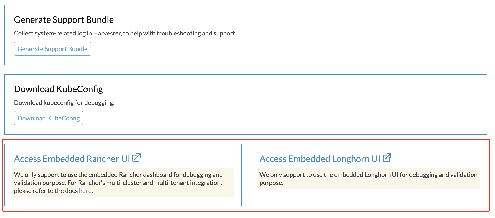

|
本文档采用自动化机器翻译技术翻译。 尽管我们力求提供准确的译文，但不对翻译内容的完整性、准确性或可靠性作出任何保证。 若出现任何内容不一致情况，请以原始 英文 版本为准，且原始英文版本为权威文本。 |
集群问题
由于HTTP代理设置不正确，无法部署多节点集群
没有配置文件的ISO安装
在安装过程中配置HTTP代理
在某些环境中，您在安装过程中配置http-proxy的操作系统环境。
一个节点变得不可用
您可能遇到的问题：
The first node is installed successfully. The second node is installed successfully. The third node is installed successfully. Then the second node changes to Unavialable state and cannot recover automatically.
解决方案
如果集群中的节点在第一个节点成功安装后不使用HTTP代理相互通信，您需要针对这些节点使用的CIDR配置http-proxy.noProxy。
例如，您的集群通过DHCP/静态设置将IP从CIDR 172.26.50.128/27`分配给节点，请将此CIDR添加到`noProxy。
设置完成后，您可以继续向集群添加新节点。
有关更多详细信息，请参阅 问题3091。
带有配置文件的ISO安装
当在ISO安装中使用配置文件时，请在系统设置中配置适当的`http-proxy`。
生成支持包
用户可以通过以下步骤在用户界面中生成支持包：
-
点击用户界面左下角的`Support`链接。

-
点击`Generate Support Bundle`按钮。

-
输入支持包的有用描述，然后点击`Create`生成并下载支持包。

|
每当您遇到可能与部署在自定义名称空间中的工作负载相关的问题时，请配置support-bundle-namespaces设置，将这些名称空间作为数据源包含在内。支持包仅收集来自配置命名空间的数据。 对于超时错误，您可以调整 support-bundle-timeout 设置的值，然后重新启动支持包生成过程。 如果您打算使用非默认的容器镜像，可以配置 support-bundle-image 设置。 |
有关收集客户集群日志和配置文件的信息，请参见 Guest Cluster Log Collection。
手动下载并保留支持包文件
默认情况下，支持包文件会在您点击用户界面上的 Create 后自动生成、下载并删除。但是，您可能希望出于各种原因保留文件，包括以下几点：
-
由于网络连接错误和其他问题，您无法下载文件。
-
您必须使用先前生成的文件来排查问题（因为生成支持包文件需要时间）。
-
您希望查看仅存在于先前生成的文件中的信息。
即使文件仍保留在集群中，用户界面也不提供下载链接。使用以下变通方法生成、手动下载并保留支持包文件：
生成文件并防止自动下载
-
在用户界面上，点击 生成支持包。
-
当进度指示器达到 20% 到 80% 时，关闭浏览器标签以防止自动下载生成的文件。
-
使用 kubectl 检索所有名称空间中所有支持包的列表。
示例：
$ kubectl get supportbundle -A NAMESPACE NAME ISSUE_URL DESCRIPTION AGE harvester-system bundle-htl5f sp1 3h43m
-
使用命令
kubectl get supportbundle -A -o yaml检索所有现有支持包的详细信息。示例：
$ kubectl get supportbundle -A -oyaml apiVersion: v1 items: - apiVersion: harvesterhci.io/v1beta1 kind: SupportBundle metadata: creationTimestamp: "2024-02-02T11:18:09Z" generation: 5 name: bundle-htl5f // resource name namespace: harvester-system resourceVersion: "1218311" uid: a3776373-05fe-4584-8a9a-baac3fa91bbf spec: description: sp1 issueURL: "" status: conditions: - lastUpdateTime: "2024-02-02T11:18:38Z" status: "True" type: Initialized filename: supportbundle_db25ccb6-b52a-4f9d-97dd-db2df2b004d4_2024-02-02T11-18-10Z.zip // support bundle file name filesize: 8868712 progress: 100 // 100 means successfully generated state: ready
当 progress 的值为 "100" 且 state 的值为 "ready" 时，文件准备好下载。
下载文件
-
创建一个下载 URL，其中包含以下信息：
-
VIP 或 DNS 名称
-
文件的资源名称
-
参数
?retain=true：如果不包含此参数，与支持包相关的资源将在文件成功下载后自动删除。
示例：
-
-
使用命令行工具（例如 curl 和 wget）或网页浏览器下载文件。
示例：
-
验证与支持包相关的资源未被删除。
示例：
$ kubectl get supportbundle -A NAMESPACE NAME ISSUE_URL DESCRIPTION AGE harvester-system bundle-htl5f sp1 3h43m
（可选）删除相关资源
保留的支持包文件会消耗内存和存储资源。每个文件对应一个位于 harvester-system 名称空间中的 supportbundle-manager-bundle* pod，生成的 ZIP 文件存储在该 pod 基于内存的文件系统的 /tmp 文件夹中。
示例：
$ kubectl get pods -n harvester-system NAME READY STATUS RESTARTS AGE supportbundle-manager-bundle-dtl2k-69dcc69b59-w64vl 1/1 Running 0 8m18s
您可以使用以下方法删除相关资源：
-
手动：运行
kubectl delete supportbundle -n {namespace} {resource-name}命令。删除支持包对象将自动删除托管其的 pod。示例：
$ kubectl delete supportbundle -n harvester-system bundle-htl5f supportbundle.harvesterhci.io "bundle-htl5f" deleted $ kubectl get supportbundle -A No resources found
-
自动：相关资源的删除基于以下设置的配置：
-
support-bundle-expiration：定义保留支持包文件的时间
-
support-bundle-timeout：定义生成支持包文件的时间
-
手动复制支持包文件
您可以运行命令 kubectl cp 从后端 pod 复制生成的文件。
示例：
kubectl cp harvester-system/supportbundle-manager-bundle-dtl2k-69dcc69b59-w64vl:/tmp/support-bundle-kit/supportbundle_db25ccb6-b52a-4f9d-97dd-db2df2b004d4_2024-02-02T11-18-10Z.zip bundle.zip
手动收集支持包的数据
当节点不可访问或未准备好时，Harvester 无法收集数据并生成支持包。解决方法是运行脚本并压缩生成的文件。
-
准备环境。
mkdir -p /tmp/support-bundle # ensure /tmp/support-bundle exists echo 'JOURNALCTL="/usr/bin/journalctl -o short-precise"' > /tmp/common export SUPPORT_BUNDLE_NODE_NAME=$(hostname) -
运行以下命令：
-
下载脚本：
curl -o collector-harvester https://raw.githubusercontent.com/rancher/support-bundle-kit/refs/heads/master/hack/collector-harvester -
添加可执行权限：
chmod +x collector-harvester -
运行脚本：
./collector-harvester / /tmp/support-bundle
-
-
压缩
/tmp/support-bundle中的文件，然后将归档文件附加到相关问题。
已知限制
-
替换后端 pod 会阻止下载支持包文件。
支持包文件存储在 pod 的基于内存的文件系统的
/tmp文件夹中，因此在集群和节点重启、Kubernetes pod 重新调度及其他过程中被替换 pod 时会被删除。新 pod 启动后会重新生成文件，但分配的名称与支持包对象中的文件名不同。示例：
-
生成并保留支持包文件。
$ kubectl get supportbundle -A -oyaml apiVersion: v1 items: - apiVersion: harvesterhci.io/v1beta1 kind: SupportBundle metadata: creationTimestamp: "2024-02-06T11:01:19Z" generation: 5 name: bundle-yr2vq namespace: harvester-system resourceVersion: "1583252" uid: eb8538cf-886b-4791-a7b0-dbc34dcee524 spec: description: sp2 issueURL: "" status: conditions: - lastUpdateTime: "2024-02-06T11:01:47Z" status: "True" type: Initialized filename: supportbundle_db25ccb6-b52a-4f9d-97dd-db2df2b004d4_2024-02-06T11-01-20Z.zip // file is ready to download filesize: 7832010 progress: 100 state: ready kind: List metadata: resourceVersion: "" -
后端 pod 重新启动。
$ kubectl get pods -n harvester-system supportbundle-manager-bundle-yr2vq-c5484fbdf-9pz8d -oyaml apiVersion: v1 kind: Pod metadata: ... labels: app: support-bundle-manager pod-template-hash: c5484fbdf rancher/supportbundle: bundle-yr2vq name: supportbundle-manager-bundle-yr2vq-c5484fbdf-9pz8d namespace: harvester-system containerStatuses: - containerID: containerd://ea82b63875c18a2b5b36afea6a47a99a5efd26464f94d401cde1727d175ef740 ... name: manager ready: true restartCount: 1 started: true state: running: startedAt: "2024-02-06T11:05:33Z" // pod's latest starting timestamp, newer than the timestamp in support bundle's file name -
后端 pod 启动后会重新生成文件。
重新生成的文件名称与支持包对象中记录的文件名不同。
$ kubectl exec -i -t -n harvester-system supportbundle-manager-bundle-yr2vq-c5484fbdf-9pz8d -- ls /tmp/support-bundle-kit -alth total 2.2M drwxr-xr-x 3 root root 4.0K Feb 6 11:05 . -rw-r--r-- 1 root root 2.2M Feb 6 11:05 supportbundle_db25ccb6-b52a-4f9d-97dd-db2df2b004d4_2024-02-06T11-05-34Z.zip // different with above file name
-
下载重新生成的文件的尝试失败。
以下下载 URL 无法用于访问重新生成的文件。
-
-
保留的支持包文件可能会影响系统和节点重启、节点排空和系统升级。
保留的支持包文件由
harvester-system名称空间中的 pod 托管。这些 pod 在系统和节点重启、节点排空和系统升级期间被替换，并消耗处理器和内存资源。此外，重新生成的文件在内容上与保留的文件非常相似，这意味着存储资源也被不必要地消耗。
有关更多信息，请参见 问题3383。
访问嵌入式Rancher和Longhorn仪表板
您现在可以直接在`Support`页面上访问嵌入式Rancher和Longhorn仪表板，但您必须先转到`Preferences`页面并在`Enable Extension developer features`下勾选`Advanced Features`框。

|
我们仅支持使用嵌入式Rancher和Longhorn仪表板进行调试和验证。 有关Rancher的多集群和多租户集成，请参阅文档这里。 |
在更改SSL/TLS启用的协议和密码后，我无法访问SUSE®虚拟化。
如果您更改了SSL/TLS启用的协议和密码设置，并且无法再访问UI和API，可能是由于配置错误的SSL/TLS协议和密码导致NGINX Ingress Controller停止工作。 按照以下步骤重置设置：
-
按照常见问题通过SSH登录到节点并切换到`root`用户。
$ sudo -s
-
使用`ssl-parameters`手动编辑设置`kubectl`：
# kubectl edit settings ssl-parameters
-
删除行`value: …`，以便NGINX Ingress Controller使用默认的协议和密码。
apiVersion: harvesterhci.io/v1beta1 default: '{}' kind: Setting metadata: name: ssl-parameters ... value: '{"protocols":"TLS99","ciphers":"WRONG_CIPHER"}' # <- Delete this line -
保存更改，您在退出编辑器后应看到以下响应：
setting.harvesterhci.io/ssl-parameters edited
您可以进一步检查 pod rke2-ingress-nginx-controller 的日志，以查看NGINX Ingress Controller是否正常工作。
网络接口未显示。
由于网络接口未显示，您可能需要帮助找到具有10G上行链路的正确网络接口。当ixgbe模块因检测到不支持的SFP+模块类型而无法加载时，上行链路不会显示。
如何识别不支持的SFP问题？
执行命令 lspci | grep -i net 以查看连接到主板的 NIC 端口数量。通过运行命令 ip a，您可以收集有关检测到的网络接口的信息。如果检测到的接口数量少于识别的 NIC 端口数量，那么问题很可能是由于使用了不支持的 SFP+ 模块。
解决方案
由于支持问题，英特尔限制了其 NIC 上使用的 SFP 类型。为了使上述更改持久，建议在安装期间将以下内容添加到 config.yaml 中。
os:
write_files:
- content: |
options ixgbe allow_unsupported_sfp=1
path: /etc/modprobe.d/ixgbe.conf
- content: |
name: "reload ixgbe module"
stages:
boot:
- commands:
- rmmod ixgbe && modprobe ixgbe
path: /oem/99_ixgbe.yaml